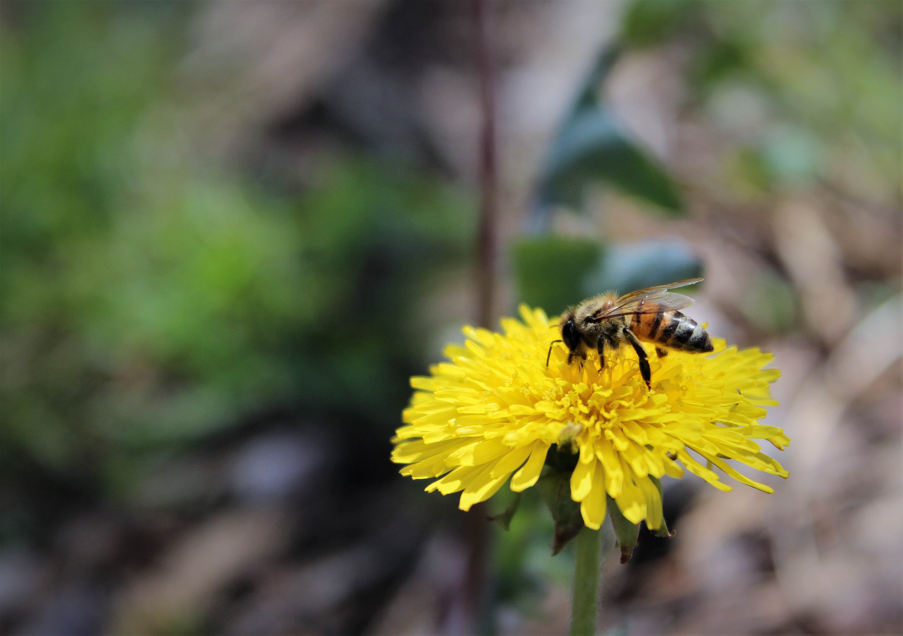

Hi, I'm Jenan
I'm a junior journalism major with a dual degree in Arabic. I aspire to not simply record current events but to tell important and complex stories that inform my peers and make sense of the world around us.
Articles
Latino faculty lacking at UT Austin
The largest minority in the United States is also one of the most underrepresented groups throughout academia. Despite Latinos’ rapidly increasing...
School of Social Work distributes life-saving medication
Texas is in the midst of an opioid epidemic, and after Hurricane Harvey, more people are at risk...
Austin cyclist accidents steadily decreasing
Bicycle accidents in Austin have decreased by nearly one-third over the past five years, yet several areas of the city remain just as dangerous to cyclists...
Restaurants remain open despite failed health inspections
At least 20 restaurants in zip codes surrounding UT Austin are continuing their operations with few repercussions despite failing...
Documentaries & Photostories

Reporting Experience
KVRX 91.7 FM
Co-Host of “The Pale Blue Dot”
October 2017 – Present
The Daily Texan
Senior Reporter
July 2017 – October 2017
The Daily Texan
News Desk Editor
June 2017 – July 2017
The Daily Texan
Staff Writer and Photographer
August 2016 – May 2017
Skills
- Editing Software: Adobe Premier, Adobe Photoshop Lightroom
- Mapping Software: QGIS
- Excel Spreadsheets
- Advanced photography skills
- Videography skills, experience with documentary filming